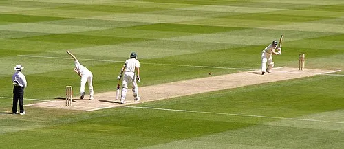

Cricket is one of the most popular sports in the world, especially in countries like India, Australia, England, and Pakistan. It is a bat-and-ball game played between two teams, where strategy, skill, and teamwork are essential.
The game originated in England during the 16th century and later spread across the British Empire. Today, cricket has become a global sport with international competitions like the ICC Cricket World Cup and the T20 World Cup.
Test cricket is considered the purest form of the game, while One-Day Internationals and T20 matches have brought fast-paced excitement to modern audiences. The Indian Premier League (IPL) has also popularized the sport on a massive scale.
Great players such as Sir Donald Bradman, Sachin Tendulkar, M.S. Dhoni, and Virat Kohli have made cricket more than just a sport — it is a passion that unites millions of fans around the world.
